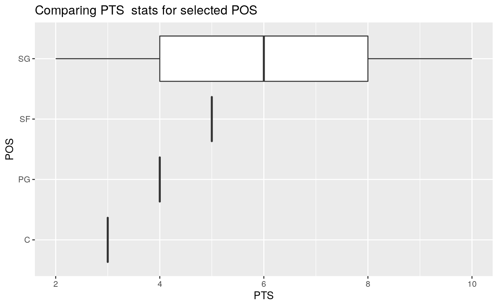
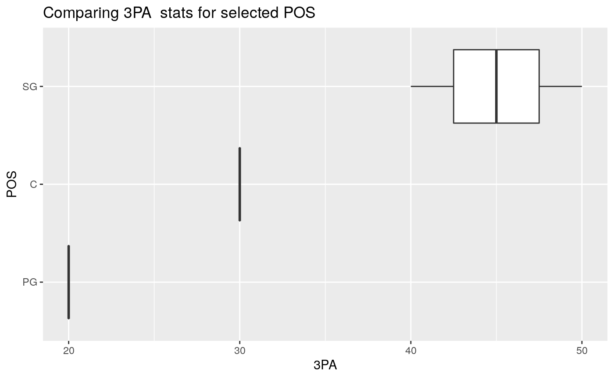
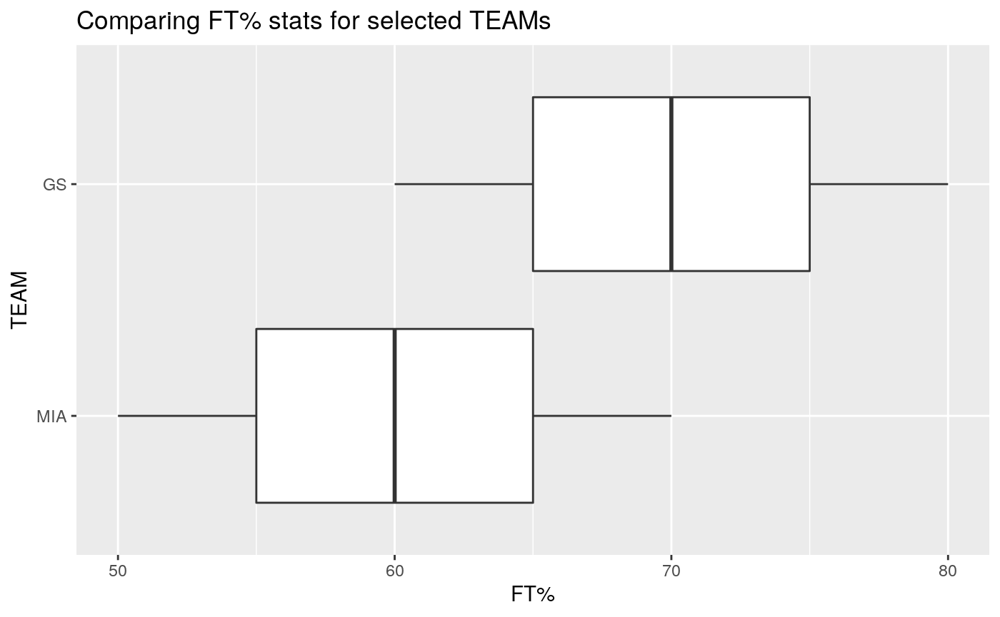
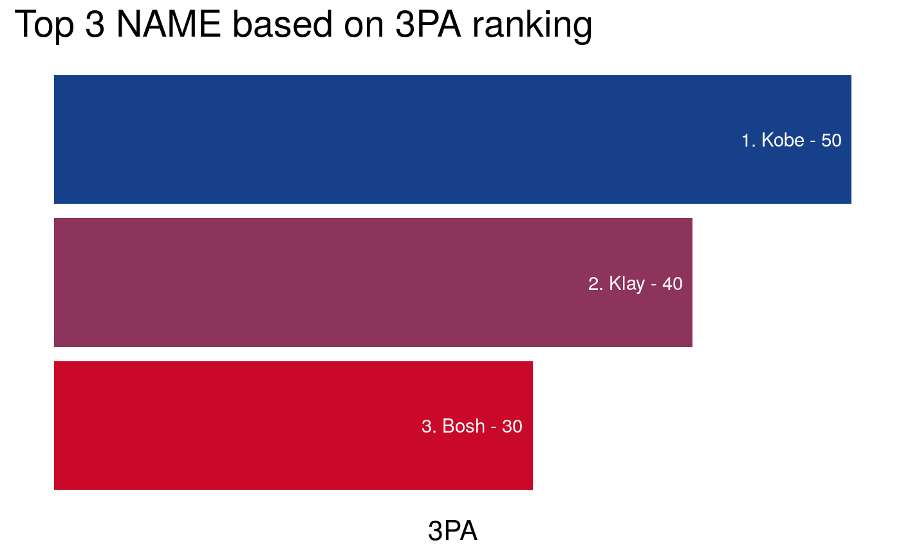
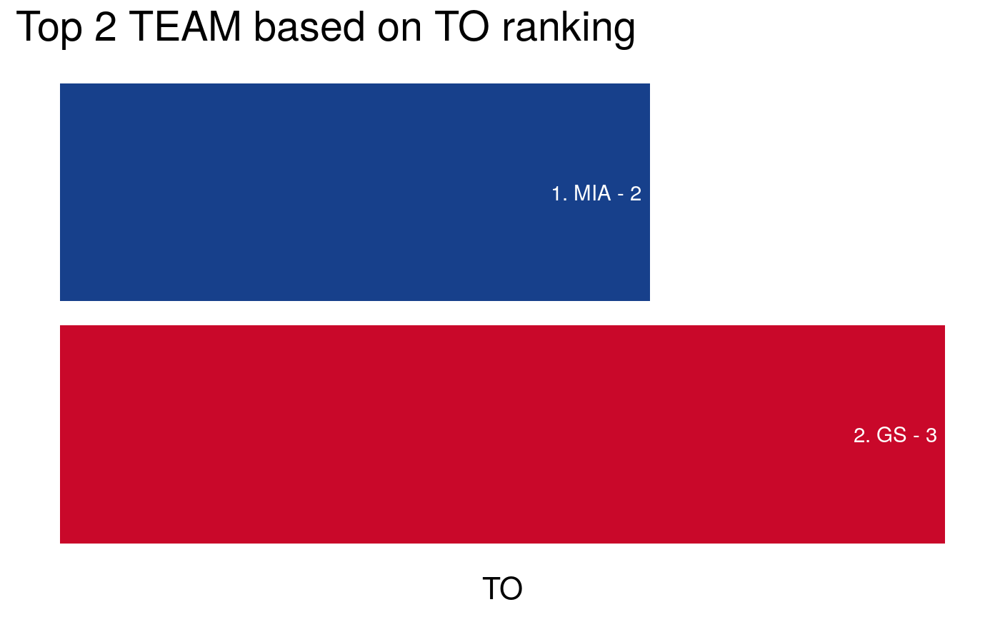

This package is designated for all NBA enthusiasts! The rsketball package works to scrape online tabular data from the ESPN NBA website into a csv file. It also includes various functions to create graphs and statistical analysis for your interest (such as boxplots, player rankings by stats, and a summary statistics table).
An example of the ESPN NBA 2018/19 Regular season player stats can be found in this EPSN NBA url
nba_scraper
nba_boxplot
nba_ranking
nba_team_stats
nba_scraper()
The rsketball::nba_scraper is based on Selenium (or specifically RSelenium) which enables automated web browsing through “drivers”. To use it, please ensure that Docker is installed.
For installation instructions, please follow the guide to Docker installation based on your OS type. Docker will be used to pull the relevant Chromedriver image that when executed as containers, will serve as the “driver” for Selenium.
The following steps are required only for the nba_scraper function. If you already have the scraped data file and wish to use the other functions (nba_boxplot, nba_rank, nbastats), there is no need to proceed with these steps.
Step 1 (Command line/Terminal): Preparation of Docker container
Pull the docker image with the following code in Terminal. We will stick to Chrome since it seems compatible with Windows while Firefox is not.
Critical step about setting ports and memory allocation:
We need to set up the Docker container default port 4444 to our computer host port 4445. Keep this port number as inputs for the nba_scraper function. We will also allocate 2GB of virtual memory for the container to scrape effectively.
Run the following code in Terminal:
Verify that the docker container is in operation by running the following code in Terminal:
Step 2 (R/RStudio): Scraping with nba_scraper
Now that the container is running with the allocated memory and assigned port, we can proceed with testing
library(rsketball)
# Scrape postseason season 2017/18 while saving to a local csv file.
nba_2017_playoffs <- nba_scraper(season_year = 2017,
season_type = "postseason",
port=4445L, # Port number as per Docker container setup
csv_path = "nba_2017_playoffs.csv")If everything was executed as intended, you should obtain a csv file called “nba_2017_playoffs.csv” containing the scraped data, and a tibble in your R environment named “nba_2017_playoffs”. With the tibble, you can use the other rsketball functions for your analysis.
Step 3 (Command line/Terminal): Termination of Docker Container
After test scraping is completed, we can shut down the Docker Container instance. This will also ensure that your computer memory/resources are restored.
If you wish to, you can also remove the Docker image from your computer, where “
To load the package:
nba_scraper
nba_scraper() will help you create the dataframe of the NBA season of interest to conduct further analysis using the functions below. Here’s a breakdown of the inputs:
season_year: Numeric integer input between 2001 to 2019 (currently).
season_type: String input of either “regular” or “postseason”
port: Port number for matching Docker container port with Selenium remote driver instance. Defaults to 4445L. Positive integer that ends with L.
csv_path: String input specifying output path of csv. Must end in “.csv”. IF NULL, no csv file will be created. Defaults to NULL.
Below are two examples of the function for scraping:
Scrape regular season 2018/19 while saving to a csv file. This should also return a tibble named nba_2018.
nba_2018 <- nba_scraper(season_year = 2018,
season_type = "regular",
port=4445L, # Port number as per Docker container setup
csv_path = "nba_2018_regular.csv")Scrape playoffs season 2017/18 without saving to a local csv file. This should return a tibble named nba_2017.
nba_2017 <- nba_scraper(season_year = 2017,
season_type = "postseason",
port=4445L # Port number as per Docker container setup
)For the illustration of the other functions, let’s create a toy dataset with similar properties as the scraped data from ESPN NBA.
nba_boxplot
To further analyze how different teams and positions affect different scoring statistics, you can use nba_boxplot(). Here’s a breakdown of the inputs:
nba_data: Tibble of scraped nba data
team_or_position: String input of either “team” or “position”
grouping_list: Specific list inputs for grouping. Shows all values (of either “team” or “position”) when NULL.
stats_column: Numeric column name of interest. Not in string input format.
To look at the distribution of Points per player or ‘PTS’ (which is a numerical column) for different positions or ‘POS’ (which is a categorical column).
Since grouping_list inputs are NULL, it will display the values of all possible positions.
# Boxplot of all player positions based on PTS
nba_boxplot(nba_data = nba_data,
team_or_position = "position",
grouping_list = NULL,
stats_column = PTS)
To look at the distribution of Three Pointers Attempts or ‘3PA’ (which is a numerical column) for specific positions (must pass in a list).
Important: Since the column id starts with a number 3, we must ensure that the input for stats_column is formatted with backticks as shown:
# Boxplot of specific player positions based on 3P%
nba_boxplot(nba_data,
team_or_position = "position",
grouping_list = c("C","PG","SG"),
stats_column = `3PA`) # Formatted with backticks.
To look at the distribution of Free Throws Percentage or ‘FT%’ (which is a numerical column) for specific teams (must pass in a list).
Important: Since the column id has a “%” character in it, we must ensure that the input for stats_column is formatted with backticks as shown:
nba_boxplot(nba_data,
team_or_position= "team",
grouping_list = c("MIA", "GS"),
stats_column = `FT%`) # Formatted with backticks.
###nba_ranking
The nba_ranking() function creates a visualization showing the rankings of a category with a statistic of interest. Here’s a breakdown of its inputs:
nba_data: Tibble of scraped nba data
column: Categorical column name for ranking. Either NAME, TEAM or POS.
by: Numeric statistic column name of interest. Not in string input format.
top: Numeric limit of the top values for ranking. Defaults to 5
descending: Boolean input to determine if ranking is in asc/descending order. Defaults to TRUE.
FUN: Function for aggregation ranking. Defaults to the mean function.
In the first example, we ranked the top 3 players (NAME) based on their number of Three Points Attempts (3PA) made in a descending order.
Important: Since the column id starts with a number 3, we must ensure that the input for stats_column is formatted with backticks as shown:
# Find top 3 players for 3 Point Attempts (3PA) where higher is better
nba_ranking(nba_data,
column = NAME,
by = `3PA`, # Formatted with backticks.
top = 3,
descending = TRUE,
FUN = mean)
In the second example, we ranked the top 3 players (NAME) based on their number of TurnOvers (TO) made in an ascending order.
# Find top 2 teams for turnover (TO) where lower is better
nba_ranking(nba_data,
column = TEAM,
by = TO,
top = 2,
descending = FALSE,
FUN = mean)
###nba_team_stats
The nba_team_stats() function finds statistics of mean, median, 25%, and 75% quantiles. This function is primarily focused on team, and allows for further grouping by player position per team. The function has the following inputs:
nba_data: Tibble of scraped nba data
stats_filter: List inputs of the different columns of interest. When NULL, it will show descriptive statistics for all numeric columns. Defaults to NULL.
teams_filter: List inputs of the different teams of interest. When NULL, it will show the descriptive statistics for all available teams. Defaults to NULL.
positions_filter: List inputs of the different player positions for each team. When NULL, it will not show any POS grouping. Defaults to NULL.
In the first example, we obtain the descriptive statistics for all available teams with the default NULL arguments in stats_filter, teams_filter, positions_filter.
# Find descriptive stats for all teams without position
nba_team_stats(nba_data)
#> # A tibble: 3 x 17
#> TEAM PTS_mean TO_mean `3PA_mean` `FT%_mean` PTS_median TO_median `3PA_median`
#> <chr> <dbl> <dbl> <dbl> <dbl> <dbl> <dbl> <dbl>
#> 1 GS 3 3 30 70 3 3 30
#> 2 LAL 10 3 50 90 10 3 50
#> 3 MIA 4 2 20 60 4 2 20
#> # … with 9 more variables: `FT%_median` <dbl>, PTS_quantile_25 <dbl>,
#> # TO_quantile_25 <dbl>, `3PA_quantile_25` <dbl>, `FT%_quantile_25` <dbl>,
#> # PTS_quantile_75 <dbl>, TO_quantile_75 <dbl>, `3PA_quantile_75` <dbl>,
#> # `FT%_quantile_75` <dbl>In the second example, we obtain the descriptive statistics of relevant numeric columns (PTS and TO) for specific teams (GS and LAL) with added grouping of their player positions (C and PG).
# Find specific stats (PTS, TO) for specific teams (GS, LAL) for specific positions (PG, SG)
nba_team_stats(nba_data,
stats_filter = c("PTS","TO"),
teams_filter = c("GS","LAL"),
positions_filter = c("SG","PG"))
#> # A tibble: 3 x 10
#> # Groups: TEAM [2]
#> TEAM POS PTS_mean TO_mean PTS_median TO_median PTS_quantile_25
#> <chr> <chr> <dbl> <dbl> <dbl> <dbl> <dbl>
#> 1 GS PG 4 2 4 2 4
#> 2 GS SG 2 4 2 4 2
#> 3 LAL SG 10 3 10 3 10
#> # … with 3 more variables: TO_quantile_25 <dbl>, PTS_quantile_75 <dbl>,
#> # TO_quantile_75 <dbl>In the third example, we obtain the descriptive statistics of relevant numeric columns (3PA and FT%) for specific teams (GS) without further grouping of their player positions (NULL input).
# Find specific stats (3PA, FT%) for specific teams (GS) without positions_filter inputs
nba_team_stats(nba_data,
stats_filter = c("3PA","FT%"),
teams_filter = c("GS"))
#> # A tibble: 1 x 9
#> TEAM `3PA_mean` `FT%_mean` `3PA_median` `FT%_median` `3PA_quantile_2…
#> <chr> <dbl> <dbl> <dbl> <dbl> <dbl>
#> 1 GS 30 70 30 70 25
#> # … with 3 more variables: `FT%_quantile_25` <dbl>, `3PA_quantile_75` <dbl>,
#> # `FT%_quantile_75` <dbl>In the fourth example, we obtain the descriptive statistics of relevant numeric columns (3PA and FT%) for all teams (NULL input) with further grouping of specified player positions (PG).
# Find specific stats (PTS, TO) for all individual teams (unspecified)
#' # for specific positions (PG, C)
nba_team_stats(nba_data,
stats_filter = c("3PA","FT%"),
positions_filter = c("PG"))
#> # A tibble: 1 x 10
#> # Groups: TEAM [1]
#> TEAM POS `3PA_mean` `FT%_mean` `3PA_median` `FT%_median` `3PA_quantile_2…
#> <chr> <chr> <dbl> <dbl> <dbl> <dbl> <dbl>
#> 1 GS PG 20 60 20 60 20
#> # … with 3 more variables: `FT%_quantile_25` <dbl>, `3PA_quantile_75` <dbl>,
#> # `FT%_quantile_75` <dbl>